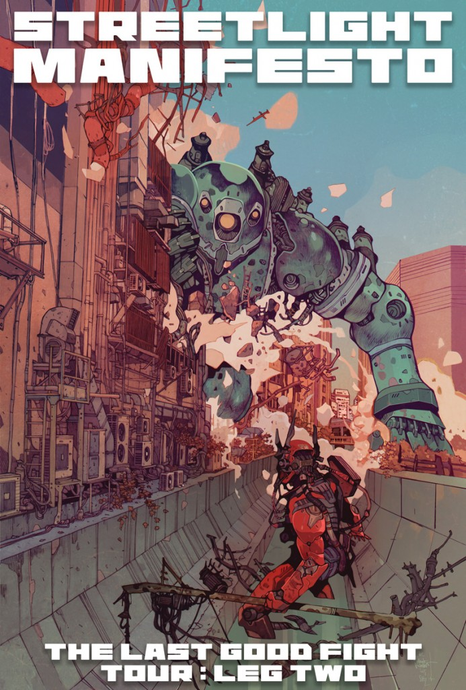

A ska band since 2002

Streetlight Manifesto is an American punk rock band from New Brunswick, New Jersey formed in 2002. They released their first album, Everything Goes Numb, which was distributed by Victory Records, on August 26, 2003. The band headlined and sold out their first concert at Rutgers University in New Brunswick, New Jersey on December 9, 2003. Several of Streetlight Manifesto's members were well known in the New Jersey third wave ska community for their roles in past ska punk bands from that area, primarily Kalnoky's Catch 22 and fellow New Jersey band One Cool Guy.
Kalnoky, Ansley and Egan (also from New Jersey) had previously been members of Catch 22. In 2002, Kalnoky gathered a large number of musicians—including Ansley and Egan, several members of One Cool Guy, his brother Achilles, and several of Achilles' orchestra friends—to perform on the Bandits of the Acoustic Revolution EP, A Call to Arms. Included on the five track independently released CD is "Here's to Life", a song which Streetlight Manifesto reworked and included on Everything Goes Numb, and a new version of Catch 22's "Dear Sergio", which included a new verse. Both Streetlight and the Bandits are members of The RISC Group, a collaboration of artists to self produce and retain rights to their music.
Read more Wikipedia